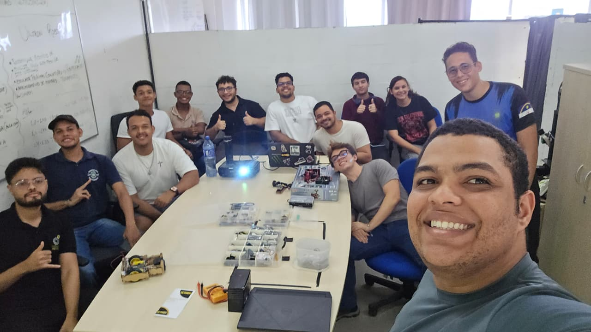

Nosso projeto teve início há bastante tempo, mas acabou sendo interrompido durante a pandemia.
E, no ano de 2024, foi retomado com entusiasmo de pessoas engajadas que fizeram da ULTRON uma equipe ativa em competições de robótica.
Depois de um período de pausa, a Ultron renasceu das cinzas como uma fênix — e agora, mais motivados do que nunca, iremos explorar todas as possibilidades que o mundo da robótica tem a oferecer.